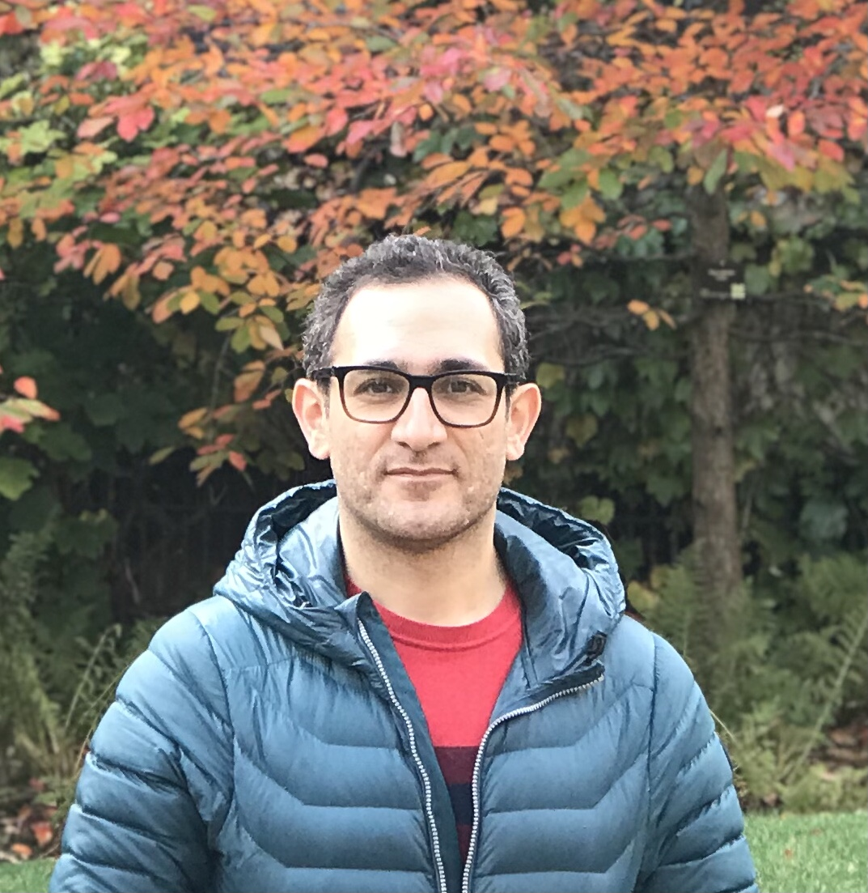
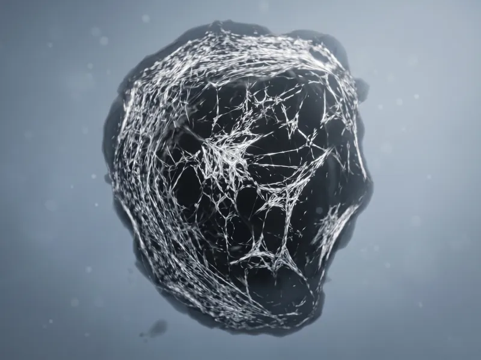

Mehdi Molaei
Computational Imaging & Scientific ML for Real-World Instruments
I build computational imaging and machine-learning systems that turn raw microscopy and instrument data into calibrated, defensible biological measurements. My work spans quantitative microscopy, physics-informed inference, and production software — from light-sheet 3D imaging and molecular counting to cellular microscopy for real scientific instruments. Most recently, I led the analysis software for Countable PCR at Countable Labs, and I am the founder of Fovea Lab.

Featured Work
Built the computational analysis platform for Countable PCR, a massively parallel single-molecule digital PCR system. It converts multichannel light-sheet 3D imaging into calibrated, quality-controlled molecular counts, enabling precision multiplexing across 10+ targets simultaneously.

Developed a polarization-resolved dark-field metrology system and physics-informed forward models to track single gold nanorods with sub-degree angular precision, extracting quantitative bending moduli from model and cellular membranes.

Built a domain-general spatiotemporal correlation framework that recasts correlation analysis as an ensemble-averaged response function, enabling robust inference of mechanical properties from actomyosin networks in model systems and living cells.